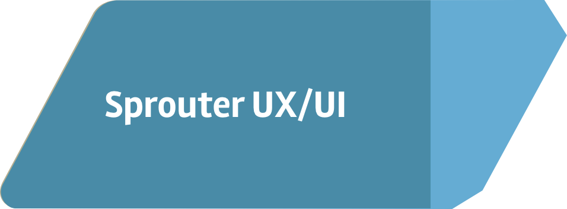
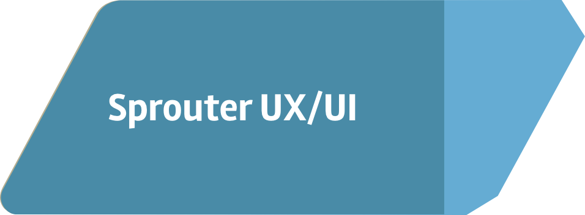

Sprouter Branding

Sprouter is a brand that connects local people who are interested in growing produce, people who already grow produce, and others looking buy and trade produce in their community.
My Roles
Brand Strategist, Graphic Designer
Brand Promise
The idea for this brand is a result of my passion for cooking, combined with my emerging interest in growing produce.
Objective
To create a platform where people can learn to grow food in their local area, and connect with other local growers as well.
Outcome
A platform that teaches people how to grow produce locally, and allows them to connect within their local communities.
Target Audience
Youth (10-25), Urban, Community/Family
Audience Needs
Users are interested in growing produce, they want to have fresh food at hand, and also want to connect with other local growers.

Challenge
Designing branding that can appeal to children and adults that encorages continued use.
Solution
To appeal to a diverse audiece I branded Sprouter using simple icons. This allows people to become famillar with the brand quickly, because the icons and style are distinctly recognizeable. The opportunities to connect with other local users, and the ability to learn to grow and trade produce as a guest; encourage both frequent and irregular users to continue using Sprouter.

Story
When I was younger I always had an interest in growing plants. I loved to watch a seed transform into a full grown plant. However, I've never tried to grow anything myself. Now thath I'm older I've actually become vegetarian, and my interest in growing plants has increased with my change in lifestyle. The idea behind Sprouter, is to teach users about growing plants in order to capture their attention. Then while they are growing then can get access to others who are also growing locally. I thought it would be a perfect platform for people who’d like to have fresh fruits or vegetables at hand, and others who’d like to invest in homegrown produce in their community. I designed a platform that is a digital farmers market.
Sketches

Mark Iterations
Design Process
This project started from a sustainability campaign, encouraging children to grow their own produce at home. The slogan was, “Grow Your Future”, and Sprouter was a promotional tool for the campaign. Sprouter’s name is based on the idea of people learning to grow produce, they wouldn’t be legitimate farmers while learning, they would be “Sprouters”. I created the logo mark for sprouter, by isolating the most prominent element from the Grow Your Future campaign mark, which was fruit hanging from a vine. In the original sketch above, the fruit was growing from a backpack. This was to represent how kids can use their own resources to grow their own food.
Moving forward from the campaign to the brand, I wanted to keep the same values of D.I.Y and sustainability. However, my main goals were to broaden the appeal to a larger audience and to make the brand appear trustworthy and knowledgable.
Font & Colors


Gill Sans is a clean san serif font. But, in italics the some of the letters terminate in flourished that match the lemon on the vine. Other letters have slanted terminals which lead the viewer’s eyes to the lemon emblem.
The colors represent the everything essential to plants, yellow is sunlight, and blue water. The green represents the plants themselves.
Final Deliverables
 
